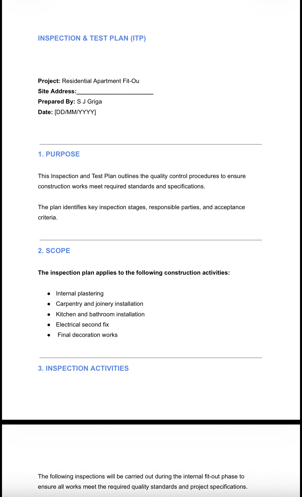
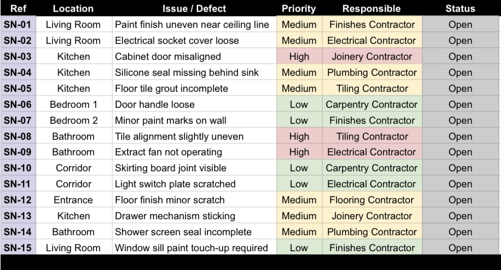
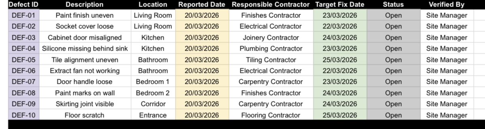
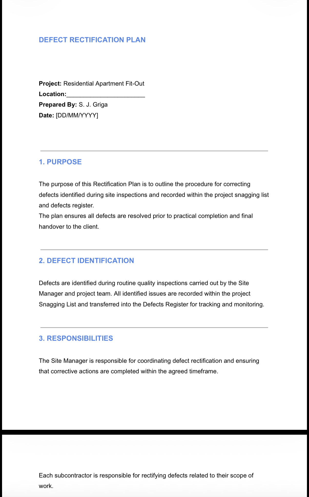

Project Overview
This portfolio simulation demonstrates my ability to manage quality control and defect resolution during the final stages of a residential apartment fit-out project. The project focuses on inspection, snagging, defect tracking, and rectification prior to practical completion.
Project Objectives
- Establish quality inspection procedures during fit-out works
- Identify defects before practical completion
- Record and track snagging items in a structured manner
- Coordinate rectification works with responsible contractors
- Ensure finished works meet quality standards before handover
Scope of Works
- Inspection of internal fit-out works
- Review of partitions and ceilings
- Inspection of flooring, joinery, and decoration
- Snagging of electrical and plumbing finishes
- Defect recording and rectification monitoring
- Final quality verification prior to practical completion
Key Deliverables
Inspection & Test Plan (ITP)
I prepared the Inspection & Test Plan (ITP) to define key inspection stages, responsible parties, and acceptance criteria for internal fit-out works.
The ITP established a structured approach to quality control by identifying when inspections should take place, what standards needed to be achieved, and who was responsible for verification.
This ensured that quality requirements were checked systematically throughout delivery rather than only at final handover.
- Defined inspection stages for key fit-out works
- Linked acceptance criteria to quality standards
- Assigned responsibilities for inspection and approval

Skills demonstrated: quality inspection, acceptance criteria, site quality control
Snagging List
I prepared a snagging list during final inspections to identify visible defects and incomplete items requiring correction before practical completion.
Snagging items were recorded by location and type, allowing defects to be communicated clearly to the responsible contractors and prioritised for action.
This created a structured quality close-out process and helped ensure that outstanding items were controlled before handover.
- Identified defects by location and trade
- Assigned priority levels to snagging items
- Recorded responsible contractors for correction

Skills demonstrated: defect identification, inspection reporting, contractor coordination
Defects Register
I used a defects register to track identified defects through to resolution, including the responsible contractor, target rectification date, and verification status.
This created clear accountability for corrective actions and allowed defect status to be monitored in a controlled and transparent way.
The register supported close-out by ensuring that items were not only identified, but also followed through to completion and verification.
- Logged defects in a controlled register
- Assigned target rectification dates
- Monitored status through to close-out

Skills demonstrated: defect tracking, close-out control, quality monitoring
Rectification Plan
I prepared a structured rectification plan to ensure defects were corrected, reinspected, and closed before practical completion.
The plan set out the rectification process, assigned responsibilities to the relevant contractors, and included a reinspection stage to verify that works met the required quality standard.
This helped move quality management beyond defect identification and ensured that corrective actions were completed in a controlled and verifiable manner.
- Defined the defect rectification process
- Assigned responsibilities to relevant contractors
- Included reinspection before final close-out

Skills demonstrated: corrective action planning, defect resolution, quality close-out
Project Outcomes
A structured quality inspection process was established during fit-out works, improving visibility of defects before practical completion.
Defects were recorded and tracked through a controlled register, while snagging items were prioritised and assigned for correction.
A rectification process was defined to support defect close-out and improve overall handover readiness.
- Established a structured quality inspection process
- Tracked defects through a controlled register
- Prioritised snagging items for correction
- Defined rectification before practical completion
Lessons Learned
This project reinforced the importance of early and continuous quality inspections during fit-out works rather than relying only on final handover checks.
It also highlighted the value of recording snagging items consistently by location and trade, which improves communication and contractor follow-up.
Finally, the project showed that defects registers and rectification planning are essential for accountability and effective quality close-out.
- Early inspections reduce pressure at final handover
- Snagging should be recorded consistently by location
- Defects registers improve accountability and follow-up
- Quality close-out is as important as programme completion
Tools & Methods Used
I used Excel and Google Sheets to structure and manage the snagging list and defects register, allowing defects to be recorded, assigned, and tracked efficiently.
Microsoft Word was used to prepare the Inspection & Test Plan and Rectification Plan, ensuring consistent documentation and clear communication of quality requirements.
A structured document control approach supported quality close-out by improving traceability and organisation of inspection and rectification records.
- Excel / Google Sheets (Snagging List, Defects Register)
- Word (Inspection & Test Plan, Rectification Plan)
- Structured document control for quality close-out
- Inspection-based quality management approach
Why This Project Matters
This project demonstrates my ability to manage quality control during the final stages of construction in a practical and structured way.
It shows how I inspect works, identify defects, coordinate corrective actions, and support quality close-out before practical completion and handover.